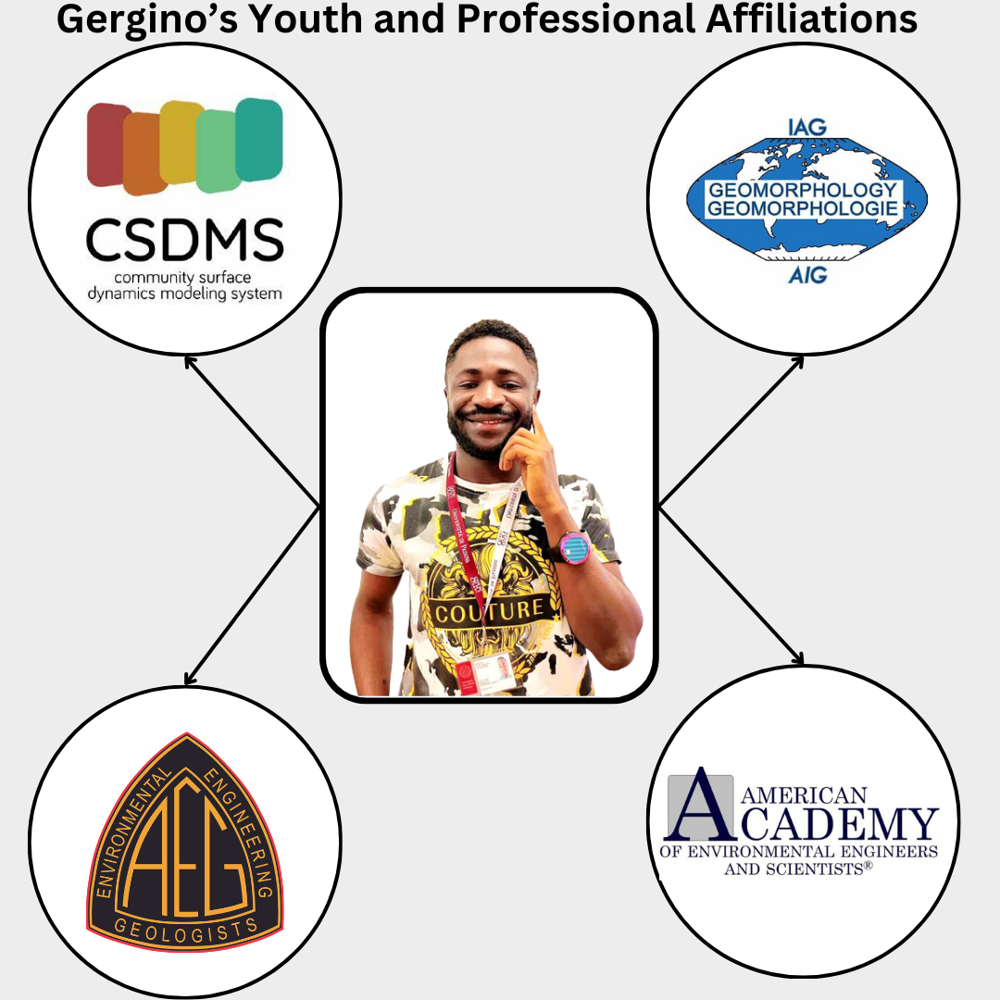
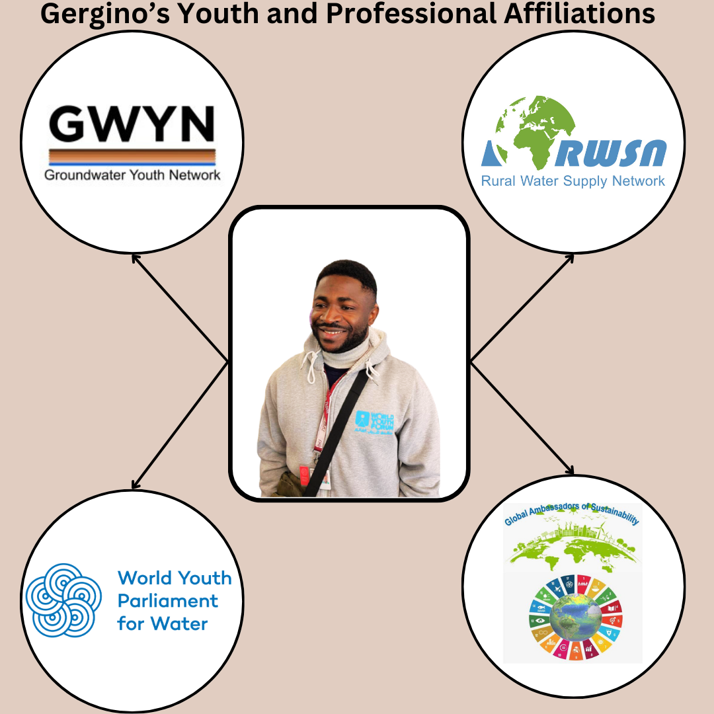
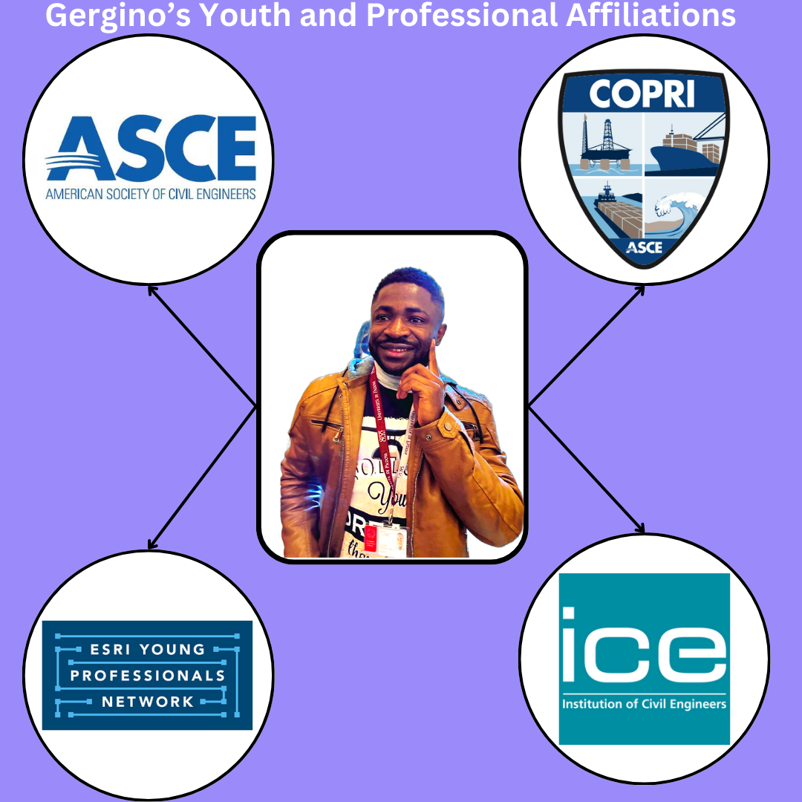
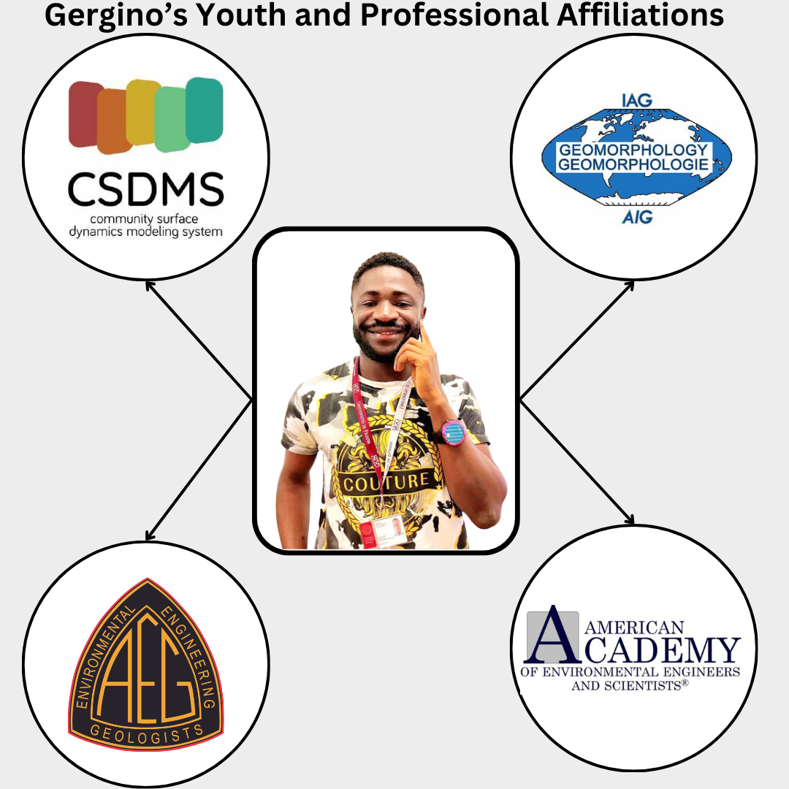
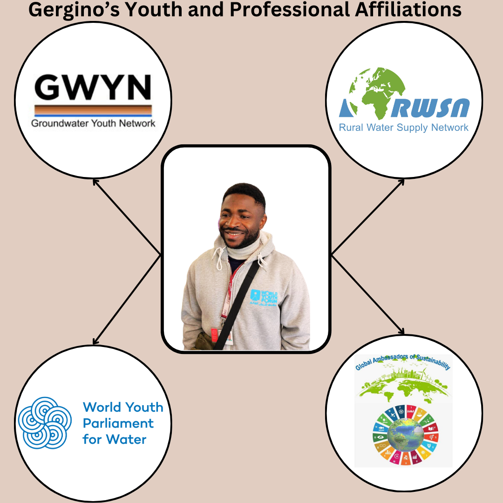
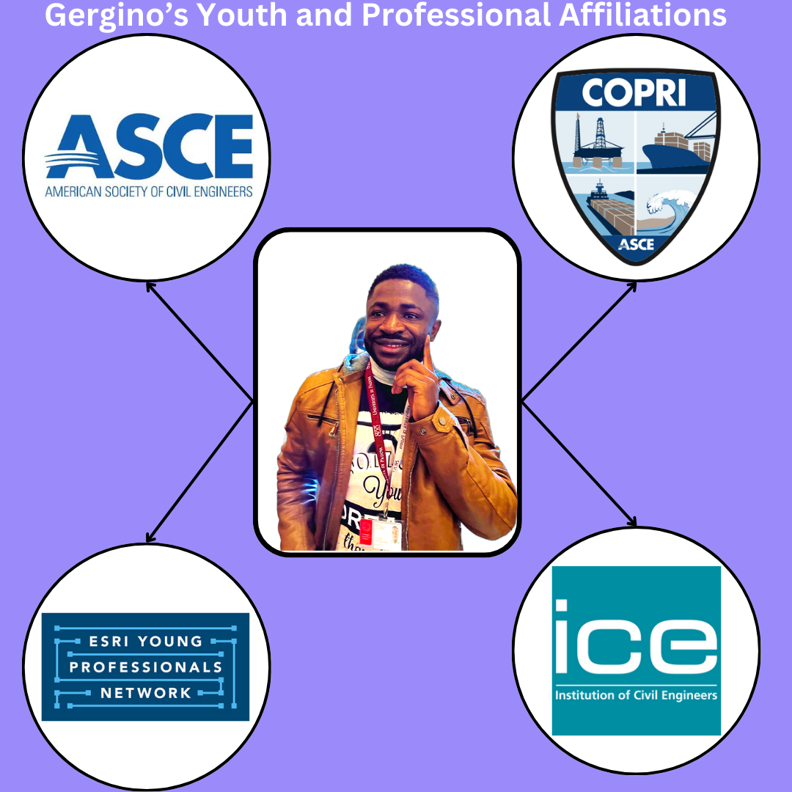

Chounna Yemele Gergino
Environmental Engineer and Researcher.
Address: Padova, Italy
About Me
I am a Ph.D. Scholar in the Department of Civil, Environmental and Architectural Engineering at the University of Padova, Italy. At Padova University, my research interest lies at the nexus between land subsidence, sea level rise, unsustainable groundwater extraction and others geo-environmental hazards in coastal cities and deltas . My PhD research focus on the vulnerability of coastal cities and mangroves to the combined effects of Land subsidence, relative sea-level rise, unsustainable groundwater extraction and flooding along the low-lying coastland of the Gulf of Guinea in the context of climate change; case study the coastland of Cameroon. This research connects the fields of geomorphology, geology, hydrogeology, geo-mechanical engineering and remote sensing.
This research investigates the following:
- Quantify land subsidence rates using satellite-based SAR interferometry analysis and examine drivers like land-use changes, urban expansion, and subsurface geology.
- Provide a vulnerability assessment of the Cameroonian coastland and identify knowledge gaps in coastal risk and mitigation strategies.
- Create site-specific numerical models to predict future subsidence using Deep Learning approaches.
- Propose mitigation or adaptive strategies to manage subsidence in Cameroon and similar global coastal regions.
I hold a double Master’s degree in Environmental Engineering from ENSTP Yaoundé and the University of Padova. My Master research focused on the use of hydrogeochemical approach (rock-water-soil interactions) to explain how elements which are nutrients to plants (essential plant nutrients) are generated, mobilised and distributed at the soil horizons, and the further dynamic that contributed to nutrients depletion and low crops yields within sedimentary watersheds with Sahelian climate, and igneous watersheds with sub-tropical climate in Northern Cameroon.
Aside from my research work at Padova, I also committed to contribute in creating a positive change in my community. In this regard, I have joined numerous professional and youth organisations with the goal to meet and collaborate with other experts from other parts of the world. Since then, I have participated in numerous youth activities ranging from environmental projects, conferences to summits. Since early 2022, I have represented Rural Water Supply Network (RWSN) at UNESCO-Groundwater Youth Network (GWYN) steering committee, where I am currently serving as the chair of communication Committee.
Mission Statement
As a young and passionate Environmental Engineer and Researcher, my mission statement is to contribute in creating a more sustainable and descend world through scientific research and development. My interest lies in improving the living conditions of my society with more focus on improving access to basic needs like water, energy, and education. I aim to reduce the under representation of Scientists in my society, particularly in the water sector and adaptation to geo-environmental hazards. In this regard, this website aims to share my activities, experiences, and eventually appears as one of the paths to achieve my mission. Here, I am committed to share my experiences in scientific research, higher education and advocacy. Hoping this experience will inspire or foster the desire of other young people from any part of the globe to take effective actions in his life and thereby contributing in creating a global change.
Personal Thoughts, Beyond Engineer
1. What “superpowers” would you like to have?
If I had lived in a different era, I would have dreamed of time travel. But today, I don’t feel the need. I am proud to live in this historical period where global upheavals are no longer just recounted in books, but experienced daily. Every day is a page of history being written, an adventure for those who are passionate about the evolution of societies. On a personal level, I see this era as a mix of challenges and opportunities. True power now lies in the ability to learn continuously, access relevant information, and use it effectively and sustainably.
2. If you could have only one hobby, what would it be?
Reading and reflecting on the strategy and history of nations is a passion I hold dearly, offering me a realistic and serene worldview. I admire the constant dynamism of nations throughout the ages. Despite the evolution of actors, eras, and methods, fundamental objectives seem to endure.
Youth and Professional Affiliations
- 2025–Present: Società Geologica Italiana (SGI)
- 2023–Present: Cameroon Association of Geomorphologist (ACG)
- 2023–Present: Esri’s Young Professional Network (YPN)
- 2023–Present: World Youth Parliament for Water (WYPW)
- 2023–Present: American Society of Civil Engineers (ASCE), Student Member
- 2023–Present: Institution of Civil Engineers (ICE), Student Member
- 2023–Present: COPRI of ASCE
- 2023–Present: Association of Environmental and Engineering Geologists (AEG)
- 2023–Present: AAEES
- 2022–2024: Community Surface Dynamics Modelling System (CSDMS)
- 2022–Present: OpenDreams
- 2022–Present: UNESCO GWYN
- 2021–Present: RWSN
- 2020–Present: Global Ambassadors of Sustainability (GAoS)
- 2020–2024: Global Forum for Sustainable Rural Development (GFSRD)
- 2015–2021: Environmental Engineering Club (ENSTP Yaoundé)
- 2016–2020: Model Initiative for Africa (MIA)
 




